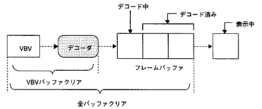

★PROGRAMMER'S GUIDE
★MPEGライブラリ
★PROGRAMMER'S GUIDE
★MPEGライブラリ
▲
戻る｜
進む▼
MPEGライブラリ
7.分岐再生
- 分岐再生とは、現在再生中のストリームを別のストリームに切り替えることです。次に再生すべきストリームが決定した時点でそのMPEGハンドルを登録しておくことにより、現在のストリームの終わりや強制切り替え関数によって、次のストリームに切り替わり再生されます。
切り替わるタイミングとしては、以下の場合があります。
- システムエンドコードが検出されたとき
- EORビットが検出されたとき
- 強制切り替え関数が呼ばれたとき
7.1 バッファのクリア
- 分岐再生をスムーズに行うためには、デコードバッファをタイミングよくクリアしなければなりません。ビデオはデコーダの前方にVBVバッファ、後方にフレームッファを持っています。
オーディオは、デコーダの前方に1セクタ分のバッファを持っています。従って、クリアの対象となるバッファは、ビデオではVBVバッファまたはVBV＋フレームバッファの2つの場合があり、オーディオではセクタバッファのみとなります。
- (1)ビデオの場合
- クリア対象
図7.1 MPEGビデオのバッファ構成

- クリアタイミング
- 即座にクリアする。
- IまたはPピクチャのデコード開始を待ってクリアする。
MPEGビデオストリームの性格上、IまたはPピクチャのデコード開始を待ってVBVバッファをクリアすると非常にきれいにつながります。他のタイミングは、レスポンスが多少良くなりますが、同じフレームが出力されたり、フレームがスキップしたりします。
- (2)オーディオの場合
- クリア対象
図7.2 MPEGオーディオのバッファ構成

- クリアタイミング
- 即座にクリアする。
- ビデオのクリアと同期してクリアする。
▲
戻る｜
進む▼
★PROGRAMMER'S GUIDE
★MPEGライブラリ
Copyright SEGA ENTERPRISES, LTD., 1997